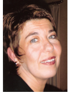

- Ich bin 1962 in Pétange geboren. - Nach meiner Ausbildung zur Krankenschwester beginne ich 1982 meine Hebammenstudien in Luxemburg. - Seit 1984 arbeite ich als Hebamme in der Maternité G-D. Charlotte in Luxemburg - Seit 1991 biete ich Geburtsvorbereitungskurse an um werdende Eltern auf ihre Rolle vorzubereiten. Während all diesen Jahren entwickeln sich die Kurse weiter und werden an die Bedürfnisse der Eltern und an den Wandel der Gesellschaft angepasst . |
 |
- Im Jahr 1997 beginne ich meine freiberufliche Karriere als Hebamme.
- Im Laufe der Jahre merke ich dass auch eine große Nachfrage an Kursen nach der Geburt besteht und so beginne ich mit den Juniormeetings und später mit den Babymassagekursen.
Eines meinere großen Ziele in meinem Beruf ist, mich immer wieder an die Bedürfnisse der werdenden Eltern anzupassen, eine gute Vorbereitung auf die Geburt anzubieten und nach der Geburt des Kindes die Eltern optimal zu begleiten.
In meinem privaten Leben bin ich sehr glücklich meinen Mann kennengelernt zu haben. Mit ihm habe ich drei Söhne bekommen, sie wurden 1985, 1990 und 1993 geboren.
Meine Hobbys sind neben meinem Beruf : Lesen, Kino, die Natur, Yoga, Schwimmen und Ferien mit meiner Familie machen.
Michèle Finck